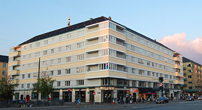

En kæde af bagerier kaldet "Lagkagehuset" har i de seneste år kunne ses flere og flere steder. Ud fra navnet skulle man umiddelbart tror, at kæden er specialiseret i lagkager,
men dette er ikke tilfældet. "Lagkagehuset" er nemlig opkaldt efter den bygning, hvor bageren åbnede sin første butik på Christianshavns Torv i København.
Bygningen blev opført i 1929-31 efter tegninger af arkitekt Edvard Thomsen. "Lagkagehuset" er et øgenavn, som københaverne hurtigt fandt på til Thomsens hus, da det ligner en lagkage.
Før der stod en "lagkage" på grunden, stod der et berygtet fængsel, men Kbhs kommune mente, at det ikke længere kunne bruges, hvorfor Thomsen fik til opgave at bygge et nyt.
På det tidspunkt var det funktionalismen også kaldt funkis, som var på sit højeste indenfor arkitektur. Funkis er en del af den bevægelse, der kaldes modernismen, og modernisterne ønskede renhed i formgivning.
Bygningens udseende skulle derfor afspejle den funktion og ethvert element, der blot tjente til dekoration skulle undgås.
Det er defor også ironisk, at det hus, der netop var beregnet på at ligne et hus og intet andet, for altid skulle blive kendt som huset, der ligner en kage. 